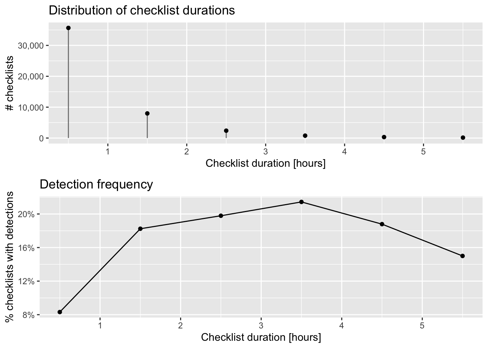

library(auk)
library(dplyr)
library(ggplot2)
library(gridExtra)
library(lubridate)
library(readr)
library(sf)
f_sed <- "data-raw/ebd_US-GA_woothr_smp_relJun-2023_sampling.txt"
checklists <- read_sampling(f_sed)
glimpse(checklists)
#> Rows: 1,080,271
#> Columns: 31
#> $ checklist_id <chr> "S60702684", "S60702754", "S60740954", "S699…
#> $ last_edited_date <chr> "2019-10-17 18:14:28", "2019-10-17 18:17:16"…
#> $ country <chr> "United States", "United States", "United St…
#> $ country_code <chr> "US", "US", "US", "US", "US", "US", "US", "U…
#> $ state <chr> "Georgia", "Georgia", "Georgia", "Georgia", …
#> $ state_code <chr> "US-GA", "US-GA", "US-GA", "US-GA", "US-GA",…
#> $ county <chr> "Dade", "Dade", "Glynn", "Charlton", "Dooly"…
#> $ county_code <chr> "US-GA-083", "US-GA-083", "US-GA-127", "US-G…
#> $ iba_code <chr> NA, NA, "US-GA_3181", "US-GA_3096", NA, NA, …
#> $ bcr_code <int> 28, 28, NA, 27, 27, 27, 27, 27, 27, 27, 27, …
#> $ usfws_code <chr> NA, NA, NA, "USFWS_714", NA, NA, NA, NA, NA,…
#> $ atlas_block <chr> NA, NA, NA, NA, NA, NA, NA, NA, NA, NA, NA, …
#> $ locality <chr> "Wildwood", "Trenton", "Jekyll Island beach"…
#> $ locality_id <chr> "L10043303", "L10043306", "L10049758", "L100…
#> $ locality_type <chr> "P", "P", "P", "P", "P", "P", "P", "P", "P",…
#> $ latitude <dbl> 35.0, 34.9, 31.0, 30.8, 32.2, 32.2, 31.8, 31…
#> $ longitude <dbl> -85.4, -85.5, -81.4, -82.4, -83.8, -83.8, -8…
#> $ observation_date <date> 1937-01-17, 1937-01-17, 1998-11-16, 1999-05…
#> $ time_observations_started <chr> NA, NA, "15:00:00", "12:00:00", NA, NA, NA, …
#> $ observer_id <chr> "obs1426731", "obs1426731", "obs292785", "ob…
#> $ sampling_event_identifier <chr> "S60702684", "S60702754", "S60740954", "S699…
#> $ protocol_type <chr> "Historical", "Historical", "Stationary", "A…
#> $ protocol_code <chr> "P62", "P62", "P21", "P23", "P20", "P20", "P…
#> $ project_code <chr> "EBIRD", "EBIRD", "EBIRD", "EBIRD", "EBIRD",…
#> $ duration_minutes <int> NA, NA, 15, 1440, NA, NA, NA, NA, NA, NA, NA…
#> $ effort_distance_km <dbl> NA, NA, NA, NA, NA, NA, NA, NA, NA, NA, NA, …
#> $ effort_area_ha <dbl> NA, NA, NA, 4.05, NA, NA, NA, NA, NA, NA, NA…
#> $ number_observers <int> NA, NA, 2, 1, 2, 2, 2, 2, 2, 2, 1, 2, 2, 2, …
#> $ all_species_reported <lgl> FALSE, FALSE, TRUE, TRUE, FALSE, FALSE, TRUE…
#> $ group_identifier <chr> NA, NA, NA, NA, NA, NA, NA, NA, NA, NA, NA, …
#> $ trip_comments <chr> "Approximate location. Maurice and Irma stop…2 eBird Data
2.1 Introduction
eBird data are collected and organized around the concept of a checklist, representing observations from a single birding event, such as a 1 km walk through a park or 15 minutes observing bird feeders in your backyard. Each checklist contains a list of species observed, counts of the number of individuals seen of each species, the location and time of the observations, and a measure of the effort expended while collecting these data. The following image depicts a typical eBird checklist as viewed on the eBird website:

Although eBird collects semi-structured citizen science data, three elements of eBird checklists distinguish them from data collected via most other similar citizen science projects. First, eBird checklist require users to specify the survey protocol they used, whether it’s traveling, stationary, incidental (i.e. if the observations were collected when birding was not the primary activity), or one of the other protocols. Second, in addition to typical information on when and where the data were collected, checklists contain effort information specifying how long the observer searched, how far they traveled, and how many observers were part of the party. Finally, observers are asked to indicate whether they are reporting all the birds they were able to identify. Checklists with all species reported, known as complete checklists, enable researchers to identify which species were not detected (rather than just not reported). These inferred non-detections allow data to be zero-filled, so there’s a zero count for any species not recorded. Complete checklists with effort information facilitate robust analyses, and thus represent the gold standard of eBird checklists. Because of these factors, eBird data are often referred to as semi-structured (Kelling et al. 2018).
eBird data are typically distributed in two parts: observation data and checklist data. In the observation dataset, each row corresponds to the sighting of a single species on a checklist, including the count and any other species-level information (e.g. age, sex, species comments, etc.). In the checklist dataset, each row corresponds to a checklist, including the date, time, location, effort (e.g. distance traveled, time spent, etc.), and any additional checklist-level information (e.g. whether this is a complete checklist or not). The two datasets can be joined together using a unique checklist identifier (sometimes referred to as the sampling event identifier).
In this chapter, we’ll demonstrate how to download eBird data for a given region and species. Next, we’ll show how to import the data into R, apply filters to it, and zero-fill the eBird data to produce detection/non-detection data suitable for modeling species distribution and abundance. Finally, we’ll perform some pre-processing steps required to ensure proper analysis of the data.
2.2 Downloading data
The observation and checklist data are released as tab-separated text files referred to as the eBird Basic Dataset (EBD) and the Sampling Event Data (SED), respectively. These files are released monthly and contain all validated bird sightings in the eBird database at the time of release. Both of these datasets can be downloaded in their entirety or a subset for a given species, region, or time period can be requested via the Custom Download form. We strongly recommend against attempting to download the complete EBD since it’s well over 100GB at the time of writing. Instead, we will demonstrate a workflow using the Custom Download approach. In what follows, we will assume you have followed the instructions for requesting access to eBird data outlined in the previous chapter.
In the interest of making examples concrete, throughout this book, we’ll use the specific example of Wood Thrush observations from Georgia (the US state, not the country) in June for our analyses. We’ll start by downloading the corresponding eBird observation (EBD) and checklist (SED) data by visiting the eBird Basic Dataset download page and filling out the Custom Download form to request Wood Thrush observations from Georgia. Make sure you check the box “Include sampling event data”, which will include the SED in the data download in addition to the EBD.

Once the data are ready, you will receive an email with a download link. The downloaded data will be in a compressed .zip format, and should be unarchived. The resulting directory will contain a two text files: one for the EBD (e.g. ebd_US-GA_woothr_smp_relJun-2023.txt) containing all the Wood Thrush observations from Georgia and one for the SED (e.g. ebd_US-GA_woothr_smp_relJun-2023_sampling.txt) containing all checklists from Georgia. The relJune-2023 component of the file name describes which version of the EBD this dataset came from; in this case it’s the June 2023 release.
2.3 Importing eBird data into R
The previous step left us with two tab separated text files, one for the EBD (i.e. observation data) and one for the SED (i.e. checklist data). For this example, we’ve placed the downloaded text files in the data-raw/ sub-directory of our working directory. Feel free to put these files in a place that’s convenient to you, but make sure to update the file paths in the following code blocks.
The auk functions read_ebd() or read_sampling() are designed to import the EBD and SED, respectively, into R. First let’s import the checklist data (SED).
Checkpoint
Take some time to explore the variables in the checklist dataset. If you’re unsure about any of the variables, consult the metadata document that came with the data download (eBird_Basic_Dataset_Metadata_v1.15.pdf).
Next we’ll import the observation data.
f_ebd <- "data-raw/ebd_US-GA_woothr_smp_relJun-2023.txt"
observations <- read_ebd(f_ebd)
glimpse(observations)
#> Rows: 40,003
#> Columns: 48
#> $ checklist_id <chr> "S72408527", "S39864871", "S99606839", "S106…
#> $ global_unique_identifier <chr> "URN:CornellLabOfOrnithology:EBIRD:OBS967920…
#> $ last_edited_date <chr> "2021-05-05 13:13:59.931013", "2020-09-08 15…
#> $ taxonomic_order <dbl> 27753, 27753, 27753, 27753, 27753, 27753, 27…
#> $ category <chr> "species", "species", "species", "species", …
#> $ taxon_concept_id <chr> "avibase-8E1D9327", "avibase-8E1D9327", "avi…
#> $ common_name <chr> "Wood Thrush", "Wood Thrush", "Wood Thrush",…
#> $ scientific_name <chr> "Hylocichla mustelina", "Hylocichla mustelin…
#> $ exotic_code <lgl> NA, NA, NA, NA, NA, NA, NA, NA, NA, NA, NA, …
#> $ observation_count <chr> "4", "X", "3", "1", "1", "1", "1", "1", "1",…
#> $ breeding_code <chr> NA, NA, NA, NA, NA, NA, NA, NA, NA, NA, NA, …
#> $ breeding_category <chr> NA, NA, NA, NA, NA, NA, NA, NA, NA, NA, NA, …
#> $ behavior_code <chr> NA, NA, NA, NA, NA, NA, NA, NA, NA, NA, NA, …
#> $ age_sex <chr> NA, NA, NA, NA, NA, NA, NA, NA, NA, NA, NA, …
#> $ country <chr> "United States", "United States", "United St…
#> $ country_code <chr> "US", "US", "US", "US", "US", "US", "US", "U…
#> $ state <chr> "Georgia", "Georgia", "Georgia", "Georgia", …
#> $ state_code <chr> "US-GA", "US-GA", "US-GA", "US-GA", "US-GA",…
#> $ county <chr> "Appling", "Appling", "Appling", "Appling", …
#> $ county_code <chr> "US-GA-001", "US-GA-001", "US-GA-001", "US-G…
#> $ iba_code <chr> NA, NA, NA, NA, NA, NA, NA, NA, NA, NA, NA, …
#> $ bcr_code <int> 27, 27, 27, 27, 27, 27, 27, 27, 27, 27, 27, …
#> $ usfws_code <chr> NA, NA, NA, NA, NA, NA, NA, NA, NA, NA, NA, …
#> $ atlas_block <chr> NA, NA, NA, NA, NA, NA, NA, NA, NA, NA, NA, …
#> $ locality <chr> "Bullard Creek WMA (Appling Co.)", "Moody Fo…
#> $ locality_id <chr> "L12067113", "L2109050", "L17232542", "L1842…
#> $ locality_type <chr> "H", "H", "P", "P", "P", "P", "P", "H", "H",…
#> $ latitude <dbl> 31.9, 31.9, 31.7, 31.6, 31.9, 31.9, 31.9, 31…
#> $ longitude <dbl> -82.4, -82.3, -82.4, -82.2, -82.3, -82.3, -8…
#> $ observation_date <date> 2001-04-26, 2004-05-15, 2004-09-19, 2004-10…
#> $ time_observations_started <chr> NA, NA, NA, NA, "06:30:00", "08:30:00", "18:…
#> $ observer_id <chr> "obsr91755", "obsr131949", "obsr91755", "obs…
#> $ sampling_event_identifier <chr> "S72408527", "S39864871", "S99606839", "S106…
#> $ protocol_type <chr> "Historical", "Historical", "Historical", "H…
#> $ protocol_code <chr> "P62", "P62", "P62", "P62", "P22", "P22", "P…
#> $ project_code <chr> "EBIRD", "EBIRD", "EBIRD", "EBIRD", "EBIRD",…
#> $ duration_minutes <int> NA, NA, NA, NA, 120, 480, NA, 180, 170, 225,…
#> $ effort_distance_km <dbl> NA, NA, NA, NA, 4.828, 9.656, NA, 6.437, 4.8…
#> $ effort_area_ha <dbl> NA, NA, NA, NA, NA, NA, NA, NA, NA, NA, NA, …
#> $ number_observers <int> 1, 1, 2, 2, 4, 1, 1, 1, 1, 1, 1, 1, 1, 1, 2,…
#> $ all_species_reported <lgl> TRUE, TRUE, FALSE, FALSE, TRUE, TRUE, FALSE,…
#> $ group_identifier <chr> NA, NA, NA, NA, NA, NA, NA, NA, NA, NA, NA, …
#> $ has_media <lgl> FALSE, FALSE, FALSE, FALSE, FALSE, FALSE, FA…
#> $ approved <lgl> TRUE, TRUE, TRUE, TRUE, TRUE, TRUE, TRUE, TR…
#> $ reviewed <lgl> FALSE, FALSE, FALSE, FALSE, FALSE, FALSE, FA…
#> $ reason <chr> NA, NA, NA, NA, NA, NA, NA, NA, NA, NA, NA, …
#> $ trip_comments <chr> "An extract from my email to GABO-L on 26 Ap…
#> $ species_comments <chr> NA, NA, "US 1", NA, NA, NA, NA, NA, NA, NA, …
Checkpoint
Take some time to explore the variables in the observation dataset. Notice that the EBD duplicates many of the checklist-level variables from the SED.
When any of the read functions from auk are used, three important processing steps occur by default behind the scenes.
- Variable name and type cleanup: The read functions assign clean variable names (in
snake_case) and correct data types to all variables in the eBird datasets. - Collapsing group checklist: eBird allows for group checklists, those shared by multiple users. These checklists lead to duplication or near duplication of records within the dataset and the function
auk_unique(), applied by default by theaukread functions, addresses this by only keeping one independent copy of each checklist. - Taxonomic rollup: eBird observations can be made at levels below species (e.g. subspecies) or above species (e.g. a bird that was identified as a duck, but the species could not be determined); however, for most uses we’ll want observations at the species level.
auk_rollup()is applied by default whenread_ebd()is used. It drops all observations not identifiable to a species and rolls up all observations reported below species to the species level.
2.3.1 Filtering
The Custom Download form allowed us to apply some basic filters to the eBird data we downloaded: we requested only Wood Thrush observations and only those on checklists from Georgia. However, in most cases you’ll want to apply additional filters to the data once you have it imported into R. For most applications, we’ll only want complete checklists i.e. those for which all birds seen or heard were recorded, which will allow us to produce zero-filled detection/non-detection data. In addition, for the examples used throughout this book we’ll only want observations from June for the last 10 years (2014-2023). We’ll also only consider checklists with stationary and traveling protocols. We can apply these filters using the filter() function from dplyr.
# filter the checklist data
checklists <- checklists %>%
filter(all_species_reported,
protocol_type %in% c("Stationary", "Traveling"),
year(observation_date) >= 2014, year(observation_date) <= 2023,
month(observation_date) == 6)
# filter the observation data
observations <- observations %>%
filter(all_species_reported,
protocol_type %in% c("Stationary", "Traveling"),
year(observation_date) >= 2014, year(observation_date) <= 2023,
month(observation_date) == 6)
Tip
It’s absolutely critical that we filter the observation and checklist data in exactly the same way to produce exactly the same population of checklists. Otherwise, the zero-filling we do in the next section will fail.
2.4 Zero-filling
To a large degree, the power of eBird for rigorous analyses comes from the complete checklist concept, and the ability to transform these checklists from presence-only data to detection/non-detection data (also called presence/absence data). The EBD alone is a source of presence-only data, with one record for each taxon (typically species) reported. For complete checklists, information about non-detections can be inferred from the SED: if there is a record in the SED but no record for a species in the EBD, then a count of zero individuals of that species can be inferred. This process is referred to a “zero-filling” the data.
To a large degree, the power of eBird for rigorous analyses comes from the ability to transform the data to produce detection/non-detection information. With presence-only data, but no information of the amount of search effort expended to produce that data, it’s challenging even to estimate how rare or common a species is. For example, consider the 10 detections presented in top row of the figure below, and ask yourself how common is this species? The bottom row of the figure presents three possible scenarios for the total number of checklists that generated the detections, from left to right
- 50 checklists: in this case the species is fairly common with 20% of checklists reporting the species.
- 250 checklists: in this case the species is uncommon with 4% of checklists reporting the species.
- 1,000 checklists: in this case the species is rare with 1% of checklists reporting the species.

Tip
Remember that the prevalence of a species on eBird checklists (e.g. 10% of checklists detected a species) is only a relative measure of the actual abundance of that species. To appear on an eBird checklist, a species must occur in an area and be detected by the observer. That detectability always plays a role in determining prevalence and it can vary drastically between regions, seasons, and species.
With that motivation, let’s use auk_zerofill() to combine the checklist and observation data together to produce zero-filled, detection/non-detection data.
zf <- auk_zerofill(observations, checklists, collapse = TRUE)By default auk_zerofill() returns a compact representation of the data, consisting of a list of two data frames, one with checklist data and the other with observation data; the use of collapse = TRUE combines these into a single data frame, which will be easier to work with.
Before continuing, we’ll transform some of the variables to a more useful form for modelling. We convert time to a decimal value between 0 and 24, force the distance traveled to 0 for stationary checklists, and create a new variable for speed. Notably, eBirders have the option of entering an “X” rather than a count for a species, to indicate that the species was present, but they didn’t keep track of how many individuals were observed. During the modeling stage, we’ll want the observation_count variable stored as an integer and we’ll convert “X” to NA to allow for this.
# function to convert time observation to hours since midnight
time_to_decimal <- function(x) {
x <- hms(x, quiet = TRUE)
hour(x) + minute(x) / 60 + second(x) / 3600
}
# clean up variables
zf <- zf %>%
mutate(
# convert X to NA
observation_count = if_else(observation_count == "X",
NA_character_, observation_count),
observation_count = as.integer(observation_count),
# effort_distance_km to 0 for non-travelling counts
effort_distance_km = if_else(protocol_type != "Traveling",
0, effort_distance_km),
# convert duration to hours
effort_hours = duration_minutes / 60,
# speed km/h
effort_speed_kmph = effort_distance_km / effort_hours,
# convert time to decimal hours since midnight
hours_of_day = time_to_decimal(time_observations_started),
# split date into year and day of year
year = year(observation_date),
day_of_year = yday(observation_date)
)2.5 Accounting for variation in detectability
As discussed in the Introduction, variation in effort between checklists makes inference challenging, because it is associated with variation in detectability. When working with semi-structured datasets like eBird, one approach to dealing with this variation is to impose some more consistent structure on the data by filtering observations on the effort variables. This reduces the variation in detectability between checklists. Based on our experience working with these data, we suggest restricting checklists to those less than 6 hours in duration and 10km in length, at speeds below 100km/h, and with 10 or fewer observers.
# additional filtering
zf_filtered <- zf %>%
filter(effort_hours <= 6,
effort_distance_km <= 10,
effort_speed_kmph <= 100,
number_observers <= 10)2.6 Test-train split
For the modeling exercises used in this book, we’ll hold aside a portion of the data from training to be used as an independent test set to assess the predictive performance of the model. Specifically, we’ll randomly split the data into 80% of checklists for training and 20% for testing. To facilitate this, we create a new variable type that will indicate whether the observation falls in the test set or training set.
zf_split <- zf_filtered %>%
mutate(type = if_else(runif(nrow(.)) <= 0.8, "train", "test"))
# confirm the proportion in each set is correct
table(zf_split$type) / nrow(zf_split)
#>
#> test train
#> 0.2 0.8Finally, there are a large number of variables in the EBD that are redundant (e.g. both state names and codes are present) or unnecessary for most modeling exercises (e.g. checklist comments and Important Bird Area codes). These can be removed at this point, keeping only the variables we want for modelling. Then we’ll save the resulting zero-filled observations for use in later chapters.
checklists <- zf_split %>%
select(checklist_id, observer_id, type,
observation_count, species_observed,
state_code, locality_id, latitude, longitude,
protocol_type, all_species_reported,
observation_date, year, day_of_year,
hours_of_day,
effort_hours, effort_distance_km, effort_speed_kmph,
number_observers)
write_csv(checklists, "data/checklists-zf_woothr_june_us-ga.csv", na = "")If you’d like to ensure you’re using exactly the same data as was used to generate this book, download the data package mentioned in the setup instructions and place the contents in the data/ subdirectory of your project directory.
2.7 Exploratory analysis and visualization
Before proceeding to training species distribution models with these data, it’s worth exploring the dataset to see what we’re working with. Let’s start by making a simple map of the observations. This map uses GIS data available for download in the data package. Place the contents of the zip file in the data/ subdirectory of your project directory.
# load and project gis data to albers equal area conic projection
map_proj <- st_crs("ESRI:102003")
ne_land <- read_sf("data/gis-data.gpkg", "ne_land") %>%
st_transform(crs = map_proj) %>%
st_geometry()
ne_country_lines <- read_sf("data/gis-data.gpkg", "ne_country_lines") %>%
st_transform(crs = map_proj) %>%
st_geometry()
ne_state_lines <- read_sf("data/gis-data.gpkg", "ne_state_lines") %>%
st_transform(crs = map_proj) %>%
st_geometry()
ga_boundary <- read_sf("data/gis-data.gpkg", "ne_states") %>%
filter(state_code == "US-GA") %>%
st_transform(crs = map_proj) %>%
st_geometry()
# prepare ebird data for mapping
checklists_sf <- checklists %>%
# convert to spatial points
st_as_sf(coords = c("longitude", "latitude"), crs = 4326) %>%
st_transform(crs = map_proj) %>%
select(species_observed)
# map
par(mar = c(0.25, 0.25, 0.25, 0.25))
# set up plot area
plot(st_geometry(checklists_sf), col = NA)
# contextual gis data
plot(ne_land, col = "#dddddd", border = "#888888", lwd = 0.5, add = TRUE)
plot(ga_boundary, col = "#cccccc", border = NA, add = TRUE)
plot(ne_state_lines, col = "#ffffff", lwd = 0.75, add = TRUE)
plot(ne_country_lines, col = "#ffffff", lwd = 1.5, add = TRUE)
# ebird observations
# not observed
plot(filter(checklists_sf, !species_observed),
pch = 19, cex = 0.1, col = alpha("#555555", 0.25),
add = TRUE)
# observed
plot(filter(checklists_sf, species_observed),
pch = 19, cex = 0.3, col = alpha("#4daf4a", 1),
add = TRUE)
# legend
legend("bottomright", bty = "n",
col = c("#555555", "#4daf4a"),
legend = c("eBird checklists", "Wood Thrush sightings"),
pch = 19)
box()
par(new = TRUE, mar = c(0, 0, 3, 0))
title("Wood Thrush eBird Observations\nJune 2014-2023")
In this map, the spatial bias in eBird data becomes immediately obvious, for example, notice the large number of checklists in areas around Atlanta, the largest city in Georgia, in the northern part of the state.
Exploring the effort variables is also a valuable exercise. For each effort variable, we’ll produce both a histogram and a plot of frequency of detection as a function of that effort variable. The histogram will tell us something about birder behavior. For example, what time of day are most people going birding, and for how long? We may also want to note values of the effort variable that have very few observations; predictions made in these regions may be unreliable due to a lack of data. The detection frequency plots tell us how the probability of detecting a species changes with effort.
2.7.1 Time of day
The chance of an observer detecting a bird when present can be highly dependent on time of day. For example, many species exhibit a peak in detection early in the morning during dawn chorus and a secondary peak early in the evening. With this in mind, the first predictor of detection that we’ll explore is the time of day at which a checklist was started. We’ll summarize the data in 1 hour intervals, then plot them. Since estimates of detection frequency are unreliable when only a small number of checklists are available, we’ll only plot hours for which at least 100 checklists are present.
# summarize data by hourly bins
breaks <- seq(0, 24)
labels <- breaks[-length(breaks)] + diff(breaks) / 2
checklists_time <- checklists %>%
mutate(hour_bins = cut(hours_of_day,
breaks = breaks,
labels = labels,
include.lowest = TRUE),
hour_bins = as.numeric(as.character(hour_bins))) %>%
group_by(hour_bins) %>%
summarise(n_checklists = n(),
n_detected = sum(species_observed),
det_freq = mean(species_observed))
# histogram
g_tod_hist <- ggplot(checklists_time) +
aes(x = hour_bins, y = n_checklists) +
geom_segment(aes(xend = hour_bins, y = 0, yend = n_checklists),
color = "grey50") +
geom_point() +
scale_x_continuous(breaks = seq(0, 24, by = 3), limits = c(0, 24)) +
scale_y_continuous(labels = scales::comma) +
labs(x = "Hours since midnight",
y = "# checklists",
title = "Distribution of observation start times")
# frequency of detection
g_tod_freq <- ggplot(checklists_time %>% filter(n_checklists > 100)) +
aes(x = hour_bins, y = det_freq) +
geom_line() +
geom_point() +
scale_x_continuous(breaks = seq(0, 24, by = 3), limits = c(0, 24)) +
scale_y_continuous(labels = scales::percent) +
labs(x = "Hours since midnight",
y = "% checklists with detections",
title = "Detection frequency")
# combine
grid.arrange(g_tod_hist, g_tod_freq)
As expected, Wood Thrush detectability is highest early in the morning and quickly falls off as the day progresses. In later chapters, we’ll make predictions at the peak time of day for detectability to limit the effect of this variation. The majority of checklist submissions also occurs in the morning; however, there are reasonable numbers of checklists between 6am and 9pm. It’s in this region that our model estimates will be most reliable.
2.7.2 Checklist duration
When we filtered the eBird data in Section 2.5, we restricted observations to those from checklists 6 hours in duration or shorter to reduce variability. Let’s see what sort of variation remains in checklist duration.
# summarize data by hour long bins
breaks <- seq(0, 6)
labels <- breaks[-length(breaks)] + diff(breaks) / 2
checklists_duration <- checklists %>%
mutate(duration_bins = cut(effort_hours,
breaks = breaks,
labels = labels,
include.lowest = TRUE),
duration_bins = as.numeric(as.character(duration_bins))) %>%
group_by(duration_bins) %>%
summarise(n_checklists = n(),
n_detected = sum(species_observed),
det_freq = mean(species_observed))
# histogram
g_duration_hist <- ggplot(checklists_duration) +
aes(x = duration_bins, y = n_checklists) +
geom_segment(aes(xend = duration_bins, y = 0, yend = n_checklists),
color = "grey50") +
geom_point() +
scale_x_continuous(breaks = breaks) +
scale_y_continuous(labels = scales::comma) +
labs(x = "Checklist duration (hours)",
y = "# checklists",
title = "Distribution of checklist durations")
# frequency of detection
g_duration_freq <- ggplot(checklists_duration %>% filter(n_checklists > 100)) +
aes(x = duration_bins, y = det_freq) +
geom_line() +
geom_point() +
scale_x_continuous(breaks = breaks) +
scale_y_continuous(labels = scales::percent) +
labs(x = "Checklist duration (hours)",
y = "% checklists with detections",
title = "Detection frequency")
# combine
grid.arrange(g_duration_hist, g_duration_freq)
The majority of checklists are an hour or shorter and there is a rapid decline in the frequency of checklists with increasing duration. In addition, longer searches yield a higher chance of detecting a Wood Thrush. In many cases, there is a saturation effect, with searches beyond a given length producing little additional benefit; however, here there appears to be a drop off in detection for checklists longer than 3.5 hours.
2.7.3 Distance traveled
As with checklist duration, we expect a priori that the greater the distance someone travels, the greater the probability of encountering at least one Wood Thrush. Let’s see if this expectation is met. Note that we have already truncated the data to checklists less than 10 km in length.
# summarize data by 1 km bins
breaks <- seq(0, 10)
labels <- breaks[-length(breaks)] + diff(breaks) / 2
checklists_dist <- checklists %>%
mutate(dist_bins = cut(effort_distance_km,
breaks = breaks,
labels = labels,
include.lowest = TRUE),
dist_bins = as.numeric(as.character(dist_bins))) %>%
group_by(dist_bins) %>%
summarise(n_checklists = n(),
n_detected = sum(species_observed),
det_freq = mean(species_observed))
# histogram
g_dist_hist <- ggplot(checklists_dist) +
aes(x = dist_bins, y = n_checklists) +
geom_segment(aes(xend = dist_bins, y = 0, yend = n_checklists),
color = "grey50") +
geom_point() +
scale_x_continuous(breaks = breaks) +
scale_y_continuous(labels = scales::comma) +
labs(x = "Distance travelled (km)",
y = "# checklists",
title = "Distribution of distance travelled")
# frequency of detection
g_dist_freq <- ggplot(checklists_dist %>% filter(n_checklists > 100)) +
aes(x = dist_bins, y = det_freq) +
geom_line() +
geom_point() +
scale_x_continuous(breaks = breaks) +
scale_y_continuous(labels = scales::percent) +
labs(x = "Distance travelled (km)",
y = "% checklists with detections",
title = "Detection frequency")
# combine
grid.arrange(g_dist_hist, g_dist_freq)
As with duration, the majority of observations are from short checklists (less than half a kilometer). One fortunate consequence of this is that most checklists will be contained within a small area within which habitat is not likely to show high variability. In Chapter 3, we will summarize land cover data within circles 3 km in diameter, centered on each checklist, and it appears that the vast majority of checklists will stay contained within this area.
2.7.4 Number of observers
Finally, let’s consider the number of observers whose observation are being reported in each checklist. We expect that at least up to some number of observers, reporting rates will increase; however, in working with these data we have found cases of declining detection rates for very large groups. With this in mind we have already restricted checklists to those with 30 or fewer observers, thus removing the very largest groups (prior to filtering, some checklists had as many as 180 observers!).
# summarize data
breaks <- seq(0, 10)
labels <- seq(1, 10)
checklists_obs <- checklists %>%
mutate(obs_bins = cut(number_observers,
breaks = breaks,
label = labels,
include.lowest = TRUE),
obs_bins = as.numeric(as.character(obs_bins))) %>%
group_by(obs_bins) %>%
summarise(n_checklists = n(),
n_detected = sum(species_observed),
det_freq = mean(species_observed))
# histogram
g_obs_hist <- ggplot(checklists_obs) +
aes(x = obs_bins, y = n_checklists) +
geom_segment(aes(xend = obs_bins, y = 0, yend = n_checklists),
color = "grey50") +
geom_point() +
scale_x_continuous(breaks = breaks) +
scale_y_continuous(labels = scales::comma) +
labs(x = "# observers",
y = "# checklists",
title = "Distribution of the number of observers")
# frequency of detection
g_obs_freq <- ggplot(checklists_obs %>% filter(n_checklists > 100)) +
aes(x = obs_bins, y = det_freq) +
geom_line() +
geom_point() +
scale_x_continuous(breaks = breaks) +
scale_y_continuous(labels = scales::percent) +
labs(x = "# observers",
y = "% checklists with detections",
title = "Detection frequency")
# combine
grid.arrange(g_obs_hist, g_obs_freq)The majority of checklists have one or two observers and there appears to be an increase in detection frequency with more observers. However, it’s hard to distinguish a discernible pattern in the noise here, likely because there are so few checklists with more than 3 observers.